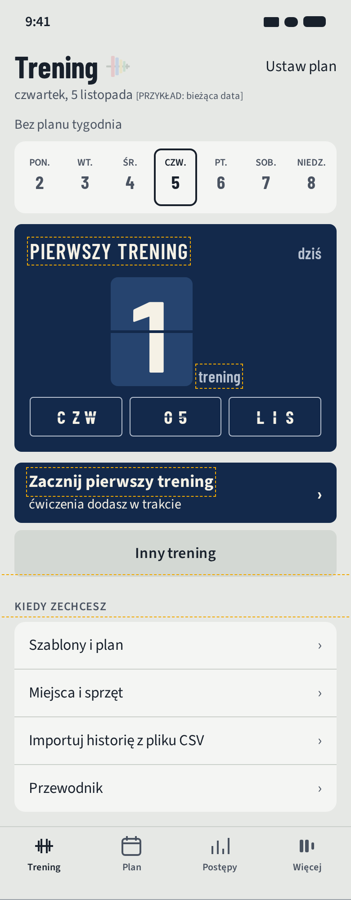
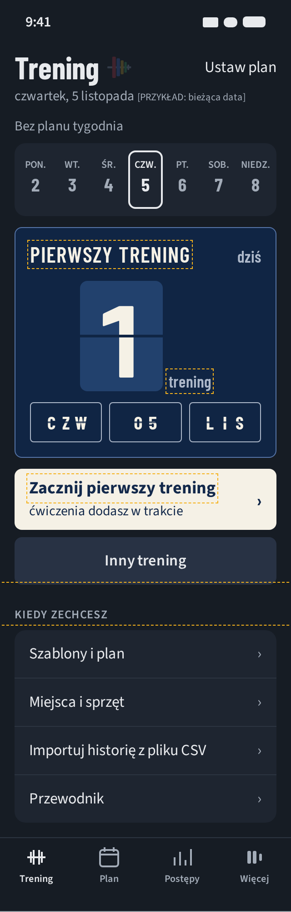
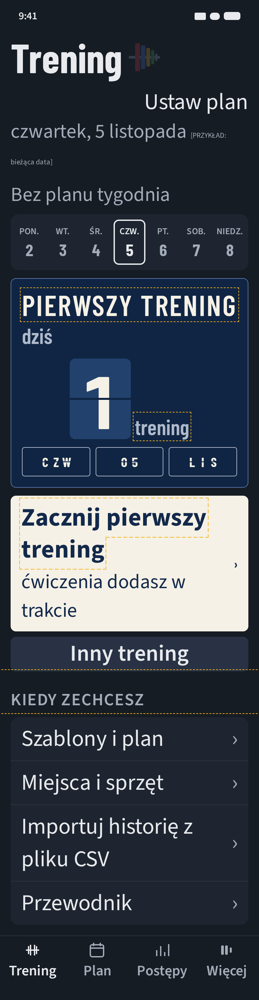
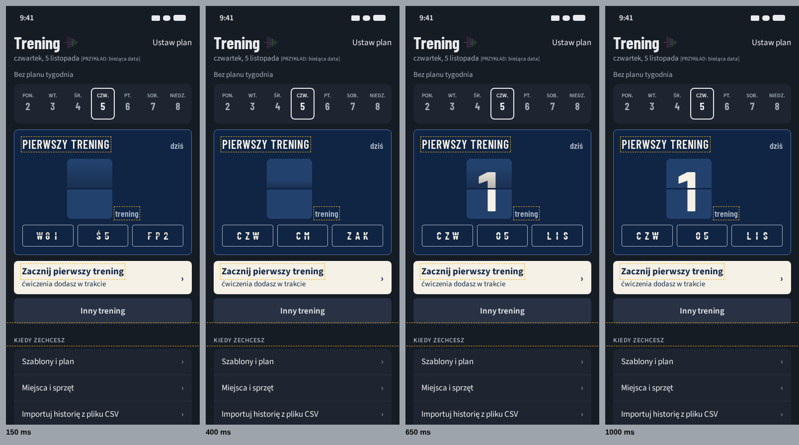
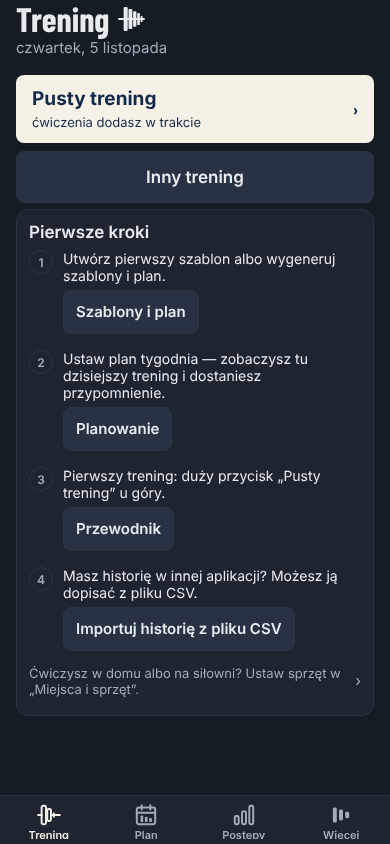
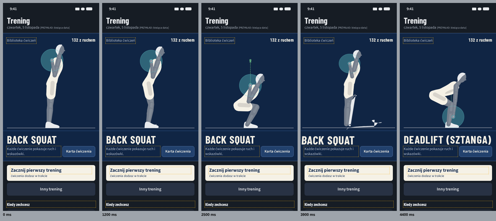
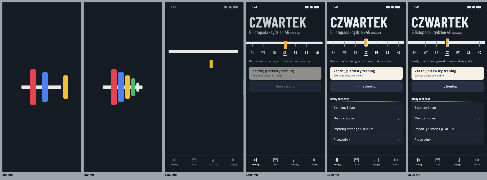
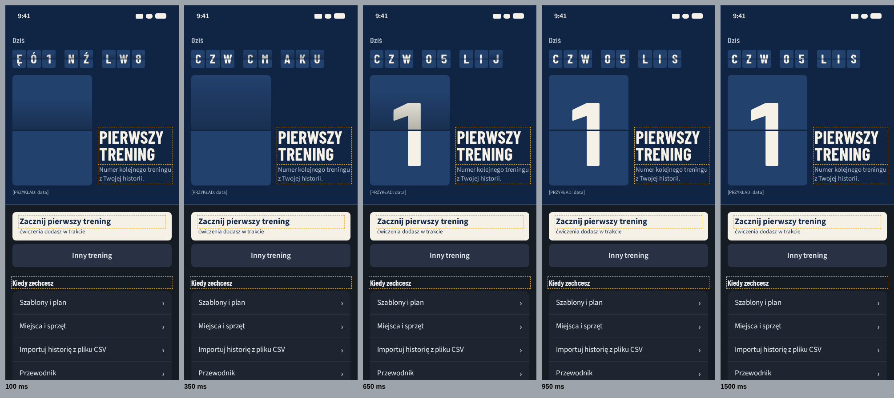

Werdykt właściciela po rundzie 1 (05.11.2026, dosłownie): „Ale tu nie ma efektu wow”. Runda 1 (porownanie-start-1-1.png) to trzy razy ta sama lista „Pierwsze kroki” z dodatkiem nad nią. Z rundy 1 zostają tylko wnioski AS IS (start-1-1/as-is.md): nowa osoba myśli „bez szablonu nie zacznę” (ST-01), a lista znika po pierwszym treningu bez domknięcia (ST-07) — oraz zasada, że element firmowy niesie dane.
Co tu jest: obecny ekran i trzy kierunki jako żywe makiety (ruch działa w ramce; przyciski pod ramką przełączają stan). Każdy kierunek ma inny rodzaj „wow”: A — żywa treść (prawdziwe figury z biblioteki), B — przejście (intro przechodzi w ekran), C — skala i mechanika (tablica klapkowa). We wszystkich pierwszy trening jest jednym stuknięciem („Zacznij pierwszy trening”), a „Pierwsze kroki” stają się spokojną listą „Kiedy zechcesz”.
Treść w makietach krojem zastępczym Source Sans 3 (na iOS SF Pro); tytuły i liczby Barlow Condensed z docs/design/fonty. Tokeny 1:1 z lib/tokens.ts. Ramka przerywana = nowy tekst (do lib/i18n i 33 języków). [PRZYKŁAD] = wartość przykładowa (data, serie).
Uwaga właściciela (05.11.2026, dosłownie): „Pamiętaj że my zmieniamy tylko pierwszy ekran dla nowego użytkownika - to ma być wow ale spójne z tym co zobaczy później”. A wprowadza figury, których potem na ekranie głównym nie ma; B dubluje pasek tygodnia; C był najbliżej. C′ to ekran główny, który osoba będzie widzieć na co dzień (tytuł z ikonką, data, „Bez planu tygodnia”, pasek tygodnia, przycisk startu, „Inny trening”), z jednym nowym elementem: tablicą „Pierwszy trening”, czyli tą samą granatową tablicą z wielkimi cyframi, którą zobaczy w trakcie serii (BoardFace).
Spójność krok po kroku: nowa osoba → po pierwszym treningu tablica znika, w pasku pojawia się znak dnia, a pod spodem „Ten tydzień” (wszystko inne zostaje na swoim miejscu) → w trakcie treningu ta sama tablica, tym razem z ciężarem i powtórzeniami.




| Pole | C′ spójny |
|---|---|
| Co robi wrażenie w 1. sekundzie | Granatowa tablica z wielką klapką, która przewraca się na „1”, a klapki daty przelatują kaskadą (ok. 0,7 s, raz przy wejściu). To ten sam przedmiot, który za chwilę pokaże ciężar i powtórzenia. |
| Kolejność | Pasek tygodnia nad tablicą: pasek stoi tam, gdzie będzie zawsze, więc po pierwszym treningu nic nie skacze — znika tylko tablica. Tablica tuż nad przyciskiem startu, jak w treningu (tablica, pod nią „Seria zrobiona”). Druga opcja: tablica nad paskiem (mocniejsze „wow” u góry, ale po pierwszym treningu pasek przeskoczy w górę). |
| Prawdziwe dane | data, dzień tygodnia, bieżący tydzień; „1” = liczba zapisanych treningów + 1 (historia). Po treningu: znak dnia w pasku i „Ten tydzień” jak dziś. |
| Tokeny | bez nowych tokenów: board, boardEdge, RADIUS.board 8, boardName, boardMeta, cyfra w TYPE.boardClock 112 pt (rola stała), pola jak pola serii (SIZE.boardFieldMin 44), MOTION.boardFlipMs; Ogranicz ruch — przenikanie MOTION.reducedCrossfadeMs 150. |
| Zmienia decyzje | 08.10.2026 „lista Pierwsze kroki” (docs/18-archiwum-do-11.10.md:148) i P4 A (docs/18-archiwum-do-30.10.md:64) → wiersze „Kiedy zechcesz” w miejscu „Ten tydzień”; reguła kodu „pasek tygodnia tylko z planem albo historią” (components/TodayPlan.tsx:35) → pasek od pierwszego dnia; tekst startu nowej osoby. Układ B, motyw A2 i intro bez zmian. |
| Koszt (czas agenta) | ok. 4–5 h: komponent tablicy nowej osoby (na bazie BoardFace), klapki, pasek bez warunku, 3 nowe teksty × 33 języki, testy ekranu, macierzy i Maestro. |
| Ryzyka | Dostępność: klapki ukryte dla VoiceOver, etykieta „Pierwszy trening. Czwartek, 5 listopada.”. Wydajność: kilkanaście podmian znaku przez ok. 0,7 s, jednorazowo. Przekład: skróty dnia i miesiąca na klapkach z Intl; w alfabetach bez Barlow (cyrylica, greka, CJK) litery krojem zastępczym systemu, a cyfry zostają w Barlow. |
| Poprawione usterki C | wielka cyfra nie przelatuje już przez przypadkowe liczby (pusta klapka → „1”, bez fałszywych danych); przy 320 pt nic nie wychodzi za ekran (pola klapek w siatce 3 kolumn, napisy zawijane); tytuł tablicy w kolorze boardText. |
Niżej runda 2 bez zmian: A, B, C — jako materiał porównawczy.

lib/figures/v2 (tylko rodziny z recenzją bramki 4: przysiad, zawias, wyciskanie — FIG_DATA.v2), klatki shapesAt(), tempo uAt(), tor trailFor(); „132 z ruchem” = shownFigureSpec po katalogu (liczone, nie wpisane). Po treningu: Twoje ćwiczenie i Twoje serie.docs/18-archiwum-do-11.10.md:148) → scena + lista „Kiedy zechcesz”; 11.10.2026 P4 A (docs/18-archiwum-do-30.10.md:64) → wiersze z „›”; układ B „najpierw trening” (09.10.2026) — przycisk startu pod sceną, nadal nad listą i nad zgięciem ekranu; nowe miejsce figur (dziś tylko karta ćwiczenia).ExerciseFigureV2, zmiana klapką, stan po treningu, i18n (4 teksty × 33 języki przez tłumacza), testy ekranu/macierzy/Maestro.
lib/dashboard.ts weekStrip działa bez planu); dni z treningiem — znak „✓” w barwie doneLine. Barwy talerzy tylko w intro (ikona), na ekranie żadnej.docs/18-archiwum-do-11.10.md:338, lib/intro.ts:4: ok. 1 s i zniknięcie) → ok. 1,6 s z przejściem, nadal pomijane stuknięciem; MOTIF.where (lib/tokens.ts:68) — gryf przestaje być ozdobą i niesie tydzień; 08.10.2026 i P4 A jak w A; dubluje pasek tygodnia osoby z planem (trzeba wybrać jeden).app/_layout.tsx) a układem zakładki (pomiar położenia), oś tygodnia, stan po treningu, testy intro i Maestro.now na jasnym tle ma 1,6:1 — dlatego ramka w kolorze tekstu (pomiar w kierunki/kontrast-start-1-1-r2-wynik.txt). Przekład: dzień tygodnia wielkimi literami w 33 językach (długie nazwy, np. niemieckie — skalowanie do szerokości).
MOTION.boardFlipMs) są już w treningu — spójny język od pierwszej sekundy.components/TodayPlan.tsx:35); 08.10.2026 i P4 A jak w A; nowy rozmiar cyfr poza TYPE.boardNumber 96 pt (nowy token).
Z funkcji, nie z gustu: nowa osoba po instalacji chce sprawdzić, czy aplikacja jest dla niej, i zacząć. A jako jedyny kierunek pokazuje w pierwszej sekundzie prawdziwą wartość aplikacji (ruch ćwiczeń z recenzją, 132 ćwiczenia), działa przy każdym otwarciu, nie tylko przy zimnym starcie (B), i nie traci siły po kilku tygodniach (C). Prowadzi też prosto do treści: „Karta ćwiczenia” i „Zacznij pierwszy trening”. Po pierwszym treningu scena pokazuje Twoje ćwiczenie i Twoje serie — domknięcie ST-07 na tej samej powierzchni. Szybki test (opcjonalnie, ok. 1 h czasu właściciela): test pięciosekundowy z 5 osobami, trzy żywe makiety z tej strony.
| # | Decyzja | Opcje (rekomendacja pogrubiona) |
|---|---|---|
| D1 | Kierunek ekranu nowej osoby | (a) C′ Spójny · (a′) A Żywa biblioteka · (b) B Gryf zostaje · (c) C Tablica klapkowa · (d) połączenie, np. intro z B prowadzi w scenę A · (e) zostawić dzisiejszy ekran |
| D2 | Lista „Pierwsze kroki” (08.10.2026, P4 A) | (a) lista „Kiedy zechcesz” z wierszami „›” pod sceną · (b) zostawić kartę z przyciskami pod sceną (ekran dłuższy, dwa punkty skupienia) · (c) kroki do Przewodnika, na starcie tylko scena i start |
| D3 | Tekst przycisku startu nowej osoby | (a) „Zacznij pierwszy trening” + „ćwiczenia dodasz w trakcie” · (b) zostawić „Pusty trening” |
| D4 | Scena po pierwszych treningach (dotyczy A) | (a) Twoje ostatnie ćwiczenie i serie, bez pętli między ćwiczeniami · (b) dalej przegląd biblioteki · (c) scena znika, wraca dzisiejszy układ z tablicą „Dziś” |
| D5 | Intro (dotyczy B) | (a) bez zmian, ok. 1 s (wybór A/C) · (b) przejście w ekran ok. 1,6 s, pomijane stuknięciem |
| # | Kandydat | Rodzaj wow | Prawdziwe dane | Ocena |
|---|---|---|---|---|
| W1 | Żywa biblioteka — figura z biblioteki na tablicy | ruch, żywa treść | figury v2 z recenzją, liczba ćwiczeń z ruchem | wybrany (A) |
| W2 | Gryf z intro zostaje jako oś tygodnia | przejście z intro | tydzień, dziś, dni z treningiem | wybrany (B) |
| W3 | Tablica klapkowa „1” na pół ekranu | skala, mechanika | data, numer treningu z historii | wybrany (C) |
| W4 | Tydzień jako 7 wysokich kolumn na cały ekran | skala | tydzień | rezerwa — ten sam rodzaj danych co B, słabszy moment |
| W5 | Ściana figur: 6–9 małych figur w jednym rytmie | ruch, ilość | biblioteka | odrzucony — tłok, 9× koszt rysowania, małe figury nieczytelne przy 320 pt |
| W6 | Figura do przewijania palcem (ruch pod palcem) | interakcja | biblioteka | rezerwa — możliwy dodatek do A (przesunięcie palcem w poziomie przewija ruch; ekran przewija się w pionie, więc gesty się nie gryzą); do decyzji po A |
| W7 | Wielki zegar „teraz” (godzina) na tablicy | skala | godzina | odrzucony — dane bez związku z treningiem, pasek stanu już ma godzinę |
| W8 | Sztanga do załadowania palcem (zabawka talerzy) | interakcja | brak — przykładowy ciężar | odrzucony — fałszywe dane, ryzyko pomylenia z kalkulatorem talerzy |
| Pole | Karta (a): dziennik siłowni bez wiedzy o dziedzinie | Karta (b): nauka z codziennym celem | A / B / C |
|---|---|---|---|
| Bohater | „Witaj!” + zdjęcie hantli | maskotka z dymkiem | A: prawdziwa figura z recenzją ruchu · B: gryf z ikony · C: tablica podejść — żadne nie jest ilustracją ani maskotką |
| Postęp | pierścień „0/3” | płomień serii, procent | brak licznika kroków; B: znak dnia na gryfie (fakt, nie seria), C: numer treningu (fakt z historii) |
| Ruch | lista wjeżdża „fade + slide up” | konfetti, pulsująca kropka | A: ruch ćwiczenia w tempie z aplikacji; B: przejście przedmiotu z ikony; C: klapka (ten sam ruch co „Seria zrobiona”) |
| Paleta | gradient przycisku | jaskrawy akcent | tokeny A2: granat tablicy, krem cyfr, bursztyn „teraz”; barwy talerzy tylko w intro (B) = ciężar w ikonie |
| Krój | systemowy pogrubiony | zaokrąglony | Barlow Condensed (tablica podejść) w dużej skali |
Żadne pole kierunków nie pokrywa się z kartami kontrolnymi. Kalibracja (wzorce studia): bez wersalikowych „eyebrow” nad sekcjami — wersaliki tylko w nazwie ćwiczenia (zasada tablicy, wz. 28) i dniu tygodnia w B.
start-1-1-r2/zrzuty/, 320/390/430 × jasny/ciemny × AX5 × 4 stany)| Kierunek | Usterki znalezione → poprawione | Pozostałe (świadomie) |
|---|---|---|
| A | 1) pierwsza klatka pusta (klapka obracała się już przy starcie) → klapka tylko między ćwiczeniami; 2) figura za mała, dużo pustego granatu → wyższa figura i tor ciężaru z aplikacji (trailFor); 3) w „Ogranicz ruch” znikał przycisk „Karta ćwiczenia” → jest obok ‹ ›; 4) paleta figury jasnego motywu ginie na granacie → na tablicy zawsze paleta ciemna | talerz figury nachodzi na głowę w pozie startowej (rysunek aplikacji, nie makiety); dwa małe podpisy (data, „Biblioteka”) obok siebie |
| B | 1) dni i tytuł pokazywały się, zanim gryf doleciał → wejście treści po przejściu; 2) zacisk zasłaniał literę „CZ” → niższy zacisk, litery niżej; 3) zacisk bursztynowy na jasnym tle 1,6:1 → ramka w kolorze tekstu; 4) tło intro gasło za szybko → 450 ms | po intro ekran jest spokojny — wow tylko przy zimnym starcie (cecha kierunku) |
| C | 1) „PIERWSZY TRENING” w kolorze podpisu (2:1 na granacie) → kolor boardText; 2) przy 320 pt napis wychodził za ekran → rozmiar od szerokości ekranu (cqw); 3) wielka cyfra przelatywała przez przypadkowe liczby (wyglądało jak dane) → pusta klapka, potem „1”; 4) klapki daty za małe → 30 px | przy 430 pt cyfra mogłaby być większa (limit 220 pt) |
Kontrast: kierunki/kontrast-start-1-1-r2-wynik.txt — 25 z 26 par OK; jedna z premedytacją pokazana jako BRAK (sam bursztyn zacisku na jasnym tle), rozwiązana ramką. Warsztat (narzedzia/warsztat.mjs): bez błędów; ostrzeżenia o liczbie wielkości tekstu dotyczą paneli opisowych poza ekranem. Kod aplikacji bez zmian.
Narzędzia: narzedzia/start-1-1-r2-figury.mjs (klatki figur z lib/figures/v2), narzedzia/start-1-1-r2-gen.mjs (makiety), narzedzia/klatki-ruchu.mjs (pasek klatek + nagranie webm), narzedzia/zrzuty.mjs (ZRZUTY_QUERY='?t=2600' — stała klatka).